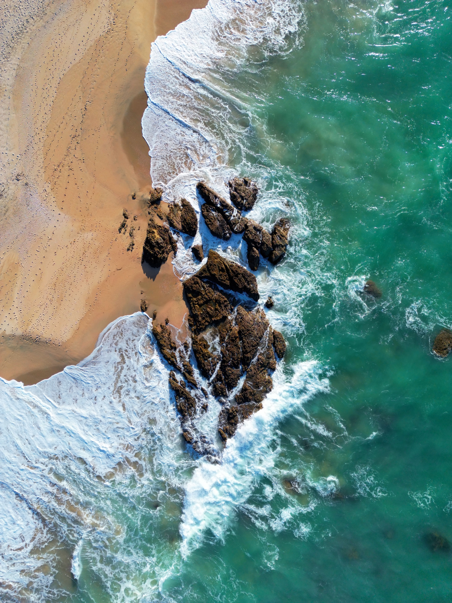
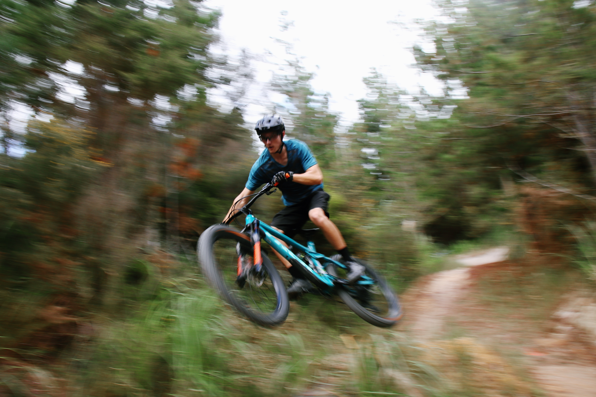
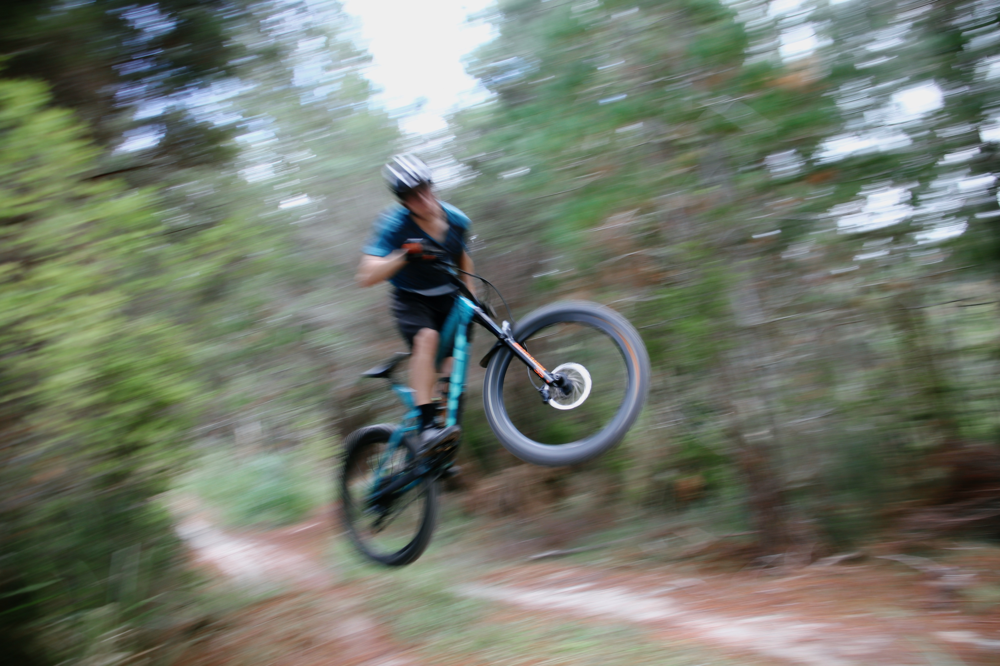
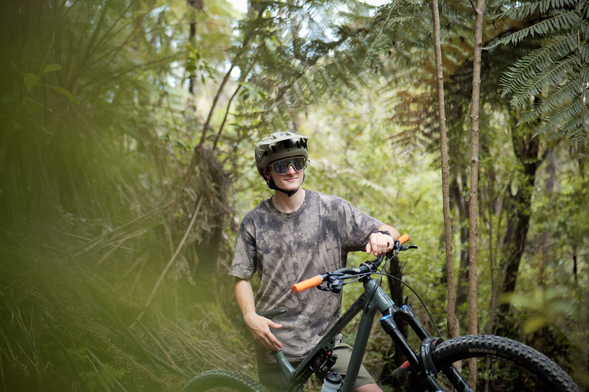
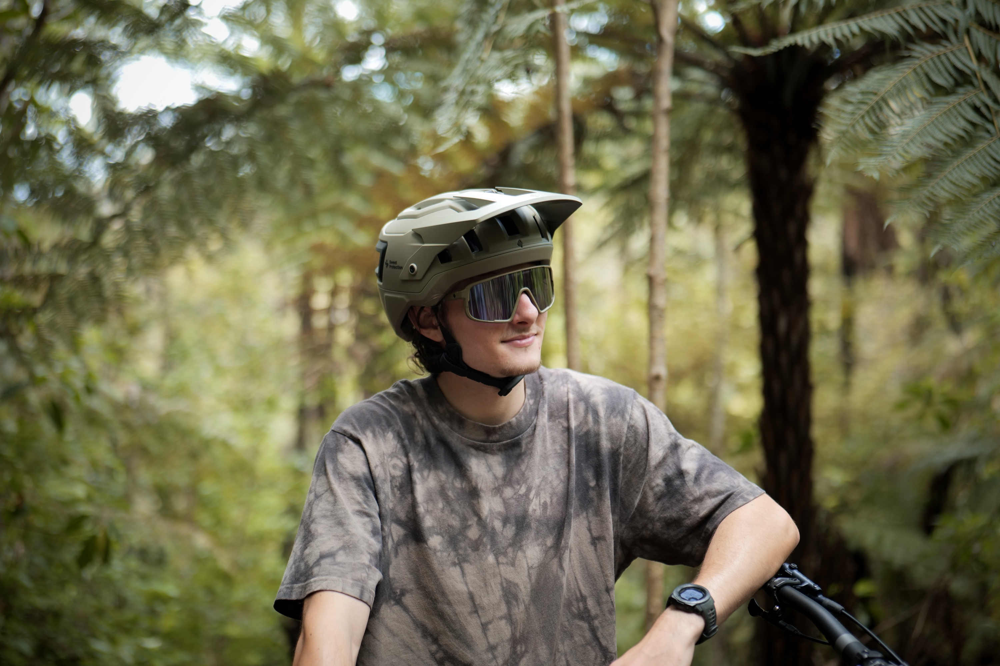
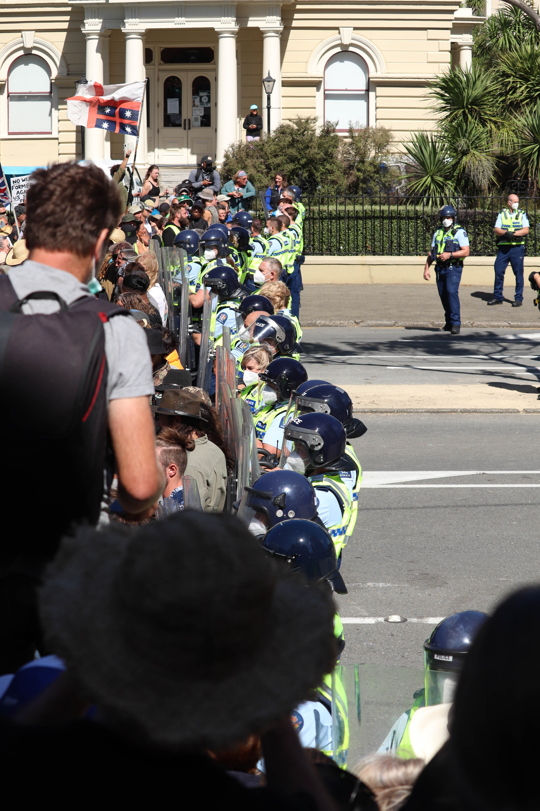
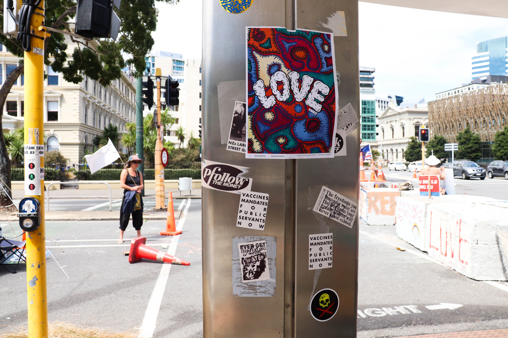
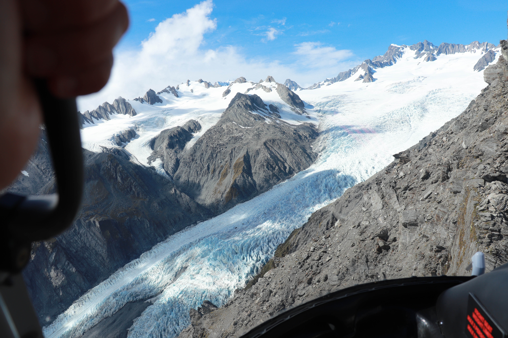
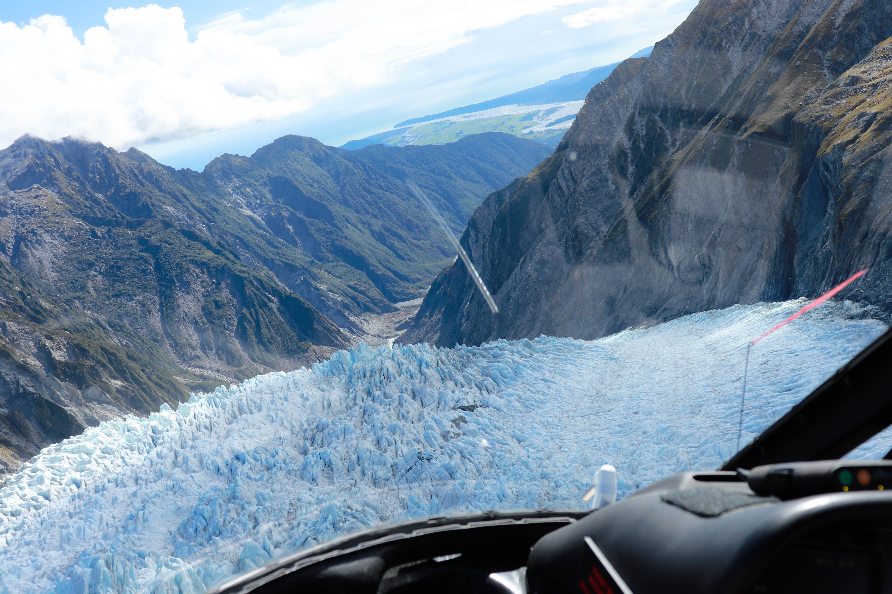
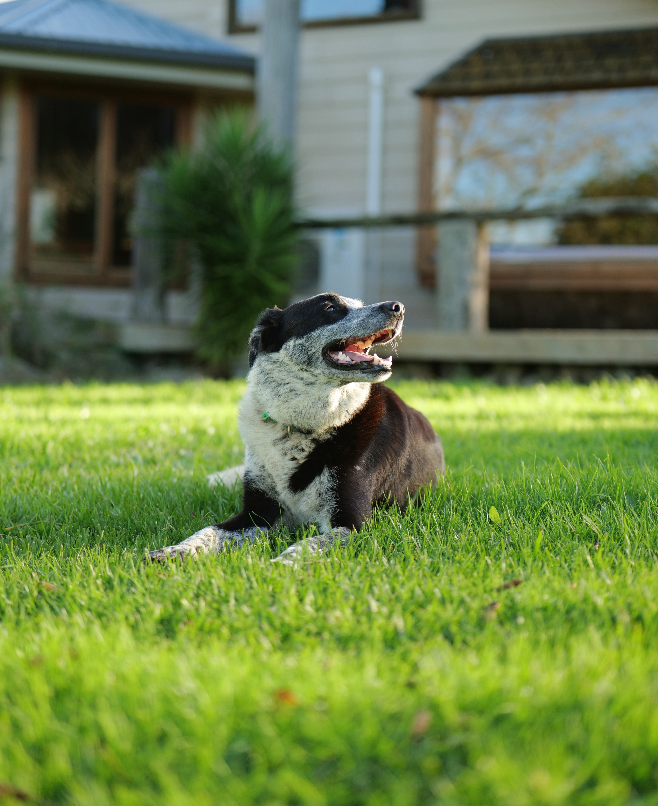

My Stills
Here's some of my favourite stills, in no paticular order.

This was one of my first photos that I took with a drone, taken at Langs Beach, Northland.
   
Some mountian biking related photos I did for Ben Henderson.


These were taken on the Coromandel, you can see my brother in the first, and third photo.
 
Three of my favourite photos that I took down at the Wellington anti-mandate protest. Truly a once in a lifetime experience.
 
Fox glacier by helicopter.
Sunrise in Northland.

Our dog, Louie